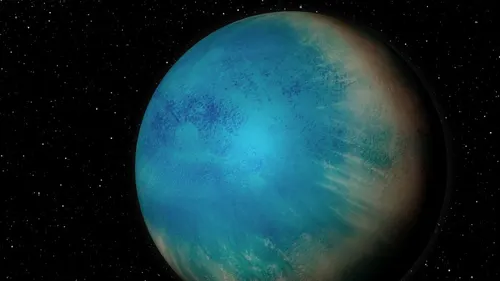

Exclusivo
Exoplanetas
James Webb Detecta Sinais de Oceano Líquido em Exoplaneta a 120 Anos-Luz
Astrônomos identificaram vapor d'água e temperatura compatível com vida na atmosfera de K2-18b, marcando uma virada histórica na busca por vida extraterrestre.